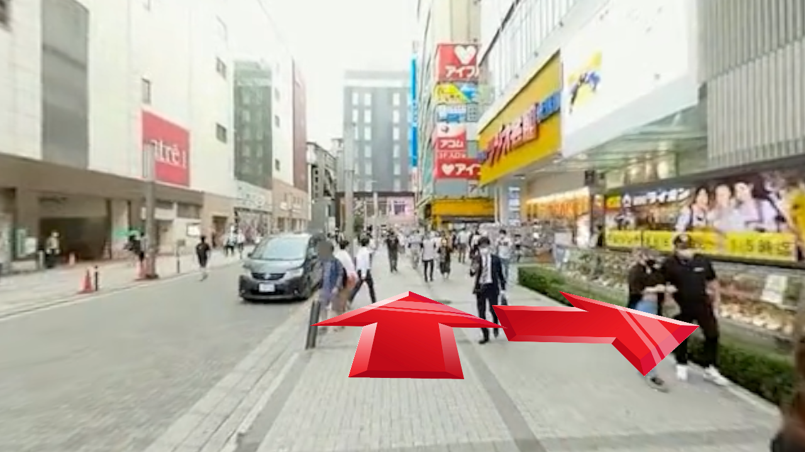
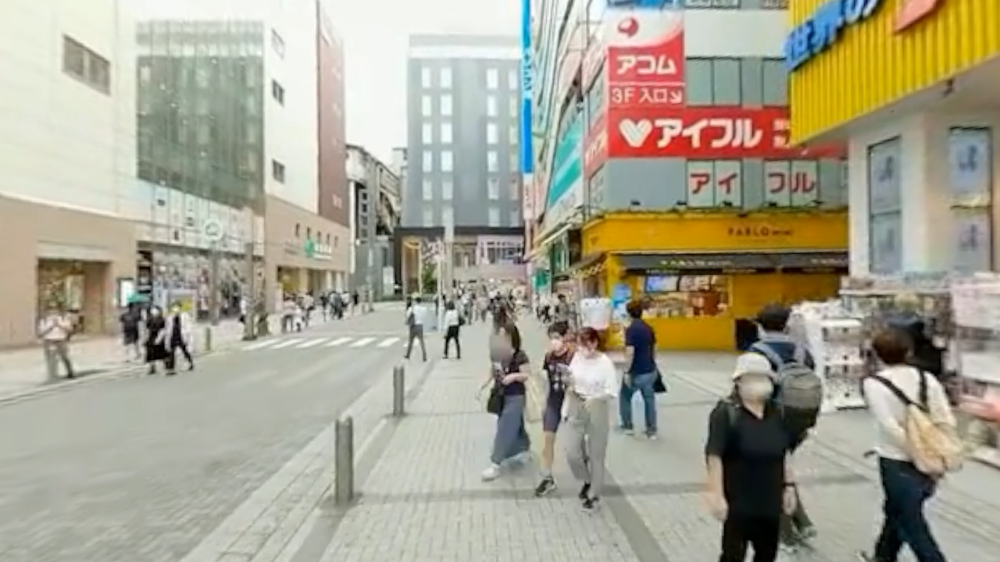
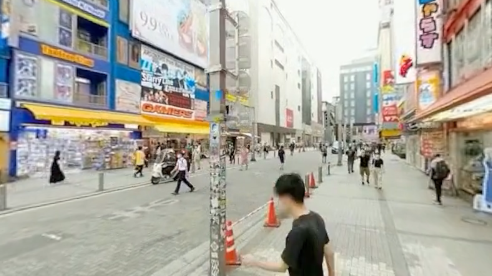
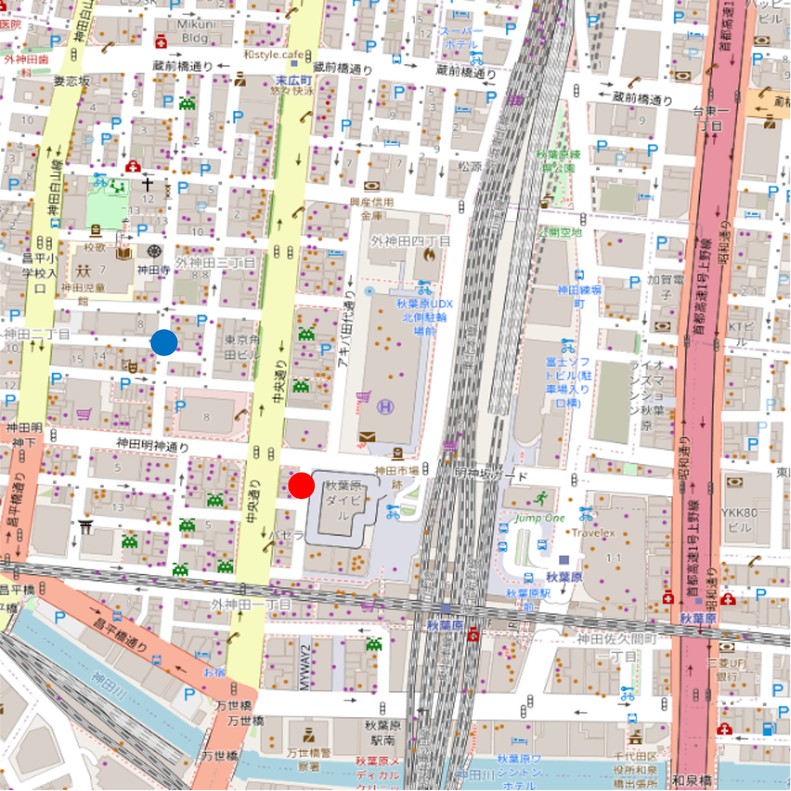
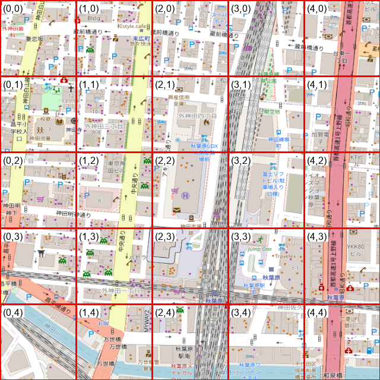
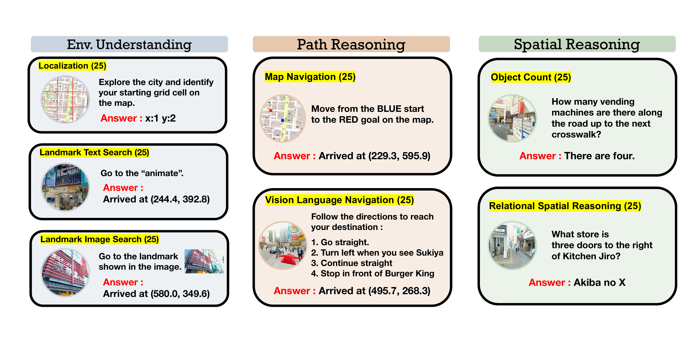

We present 360CityArena, a benchmark for evaluating the urban exploration capabilities of Embodied Agents within a photorealistic environment constructed from 360° videos. Existing outdoor benchmarks either lack sufficient photorealism and complexity, resulting in a considerable gap from real-world urban environments. 360CityArena is built on a realistic reconstruction of the Akihabara district in Tokyo, Japan, using 602 360° video segments covering 85 streets, and consists of 175 meticulously human-crafted tasks. It encompasses three task categories — Environment Understanding, Path Reasoning, and Spatial Reasoning — covering fundamental abilities required for urban exploration, such as localization, landmark search, path planning, and relational spatial reasoning, thereby enabling comprehensive evaluation in realistic urban scenes. Our evaluation using state-of-the-art LMM-based agents shows that even the strongest model, Gemini-2.5 Flash, performs far below human level (human: 77.3% vs. Gemini-2.5 Flash: 17.1%), revealing substantial challenges that remain in city-scale embodied navigation and reasoning. 360CityArena provides a necessary and challenging testbed for photorealistic urban-district navigation and spatial reasoning.
360CityArena is built on a Realistic Virtual World of Akihabara reconstructed from 602 360° video segments over 85 streets. The videos are projected onto a spherical surface and organized into a navigable pose graph in Unity, so agents traverse prerecorded 360° trajectories rather than moving freely in 3D. The resulting graph forms a single connected component with 193 nodes and 305 edges, with a mean branching degree of 3.16. Geographically, it spans roughly 750 m north–south and 650 m east–west around Akihabara Station — a dense, information-rich district with narrow sidewalks, complex building layouts, and abundant electronic signage. Each street is captured in both directions to reflect direction-dependent visual changes.





360CityArena consists of three major categories and seven subcategories. Each subcategory contains 25 tasks, and every task is labeled Easy, Medium, or Hard.
Perception, memory, and language-grounded scene understanding — can the agent recognize where it is and what surrounds it?
Planning and executing routes that respect the real spatial layout of the city.
Relational understanding and quantitative perception of objects and landmarks in the scene.

Examples of all seven task types. Each subcategory contains 25 human-crafted, verified-solvable tasks.
@inproceedings{watanabe2026360cityarena,
title = {360CityArena: A Realistic Virtual Urban Navigation Benchmark for Embodied Agents},
author = {Watanabe, Kenta and Miyai, Atsuyuki and Takenawa, Mizuki and Aizawa, Kiyoharu and Yamasaki, Toshihiko},
booktitle = {Proceedings of the European Conference on Computer Vision (ECCV)},
year = {2026}
}@article{takenawa2026building,
title = {Building and Evaluating a Realistic Virtual World for Large Scale Urban Exploration from 360° Videos},
author = {Takenawa, Mizuki and Sugimoto, Naoki and W{\"o}hler, Leslie and Ikehata, Satoshi and Aizawa, Kiyoharu},
journal = {Multimedia Tools and Applications},
volume = {85},
number = {2},
pages = {149},
year = {2026}
}